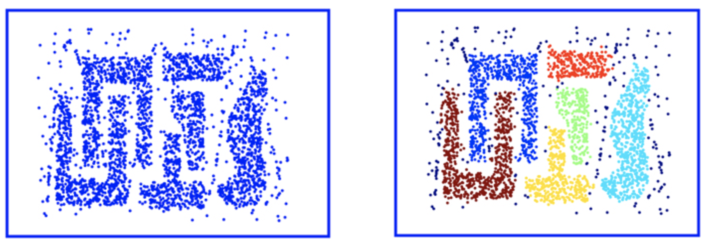

Algoritmos de clustering
Los problemas de clustering son aquellos en los que se quiere descubrir las agrupaciones de datos que mejor aplican al problema que se desea resolver, como agrupar clientes por su comportamiento de compra
Entre las técnicas de clusterización se pueden clasificar en:
Según pertenencia de los datos:
Exclusivos: cada instancia pertenece a un sólo cluster.
Superpuestos: no son exclusivos y un dato puede pertenecer a más de uno.
Jerárquicos: cada hijo puede ser unido para formar un cluster padre.
Difuso o probabilístico: cada punto pertenece a todos los cluster con grados de pertenencia que van de 0 a 1.
Según el algoritmo usando para hallar los cluster:
Basado en prototipo: cada cluster se representa por un objeto central (prototipo). Usualmente es el centro del cluster - centroide.
Cluster de densidad: Un cluster puede definirse como una región densa donde se concentran objetos rodeados de un área de baja densidad. Las áreas de baja densidad pueden ser descartadas como ruido.
Cluster jerárquico: Se generan en base a la distancia entre los puntos. La salida es un dendograma. Hay dos acercamientos bottom-up donde cada dato se considera un cluster y los cluster se unen y top-down
donde todo el data set es un cluster y ser divide recursivamente en subclusters. Es útil cuando el tamaño de la información es limitado.
Cluster basado en modelo: Un cluster puede concebirse como un grupo en el cual los puntos tienen la misma probabilidad d edistrbución. Cada uno puede ser representado por un modelo de distribución donde el parámetro
de la distribución puede ser optimizado iterativamente.
K-MEANS CLUSTERING

En este técnica el usuario/investigador especifica la cantidad de clusters k que deben ser agrupados en el data set.
El objetivo de k-means es hallar un prototipo para cada cluster, todos los puntos son asignados entonces al prototipo(centroide) más cercano.
En k-means es la media de los puntos, pero podría ser la información más representativa.
El centroide no tiene por qué ser un punto real del data set, puede ser imaginario.
Cada partición del data set se llaman también particiones Voronoi y cada prototipo es una semilla en la partición, los puntos asociados a la partición forman una única partición.
K-Means clustering crea k particiones en un espacio n-dimensional donde n es la cantidad de atributos del data set. Para particionar el data set se debe usar una medida de proximidad, la distancia euclideana es la más usada.
Puede tener el problema de encontrar óptimos locales en lugar de converger a la mejor solución global.
PASOS DEL ALGORITMO:
1- Iniciar k centroides aleatoriamente. K debe ser especificado por el usuario.
2- Todos los puntos son asignados al centroide más cercano para formar un cluster. La distancia más común es Euclideana pero se pueden usar otras como el coeficiente de Jaccard o distancia de Manhattan.
3- Para cada cluster se calculan nuevos centroides. El centroide es el punto más representativo de todos los puntos en el cluster.
Este paso se puede interpretar como minimizar la suma de errores al cuadrado (SSE) de todos los puntos en el cluster al centroide.
4 - Se repite la asignación de puntos y cálculos de centroides hasta que todos los puntos son reasignados a nuevos centroides.
5-Termina cuando no se identifican cambios a la asignación.
DBSCAN - Density Based Spatial Clustering of Applications with Noise
 Un cluster también puede ser definido como un área de gran concentración (o densidad) de datos rodeado de áreas de baja concentración de datos.
Un cluster basado en densidad identifica clusters en la información basado en la medida de distribución de densidad en el espacio n dimensional.
No es necesario especificar la cantidad de cluster como parámetro.
La densidad puede ser definida como la cantidad de puntos en una unidad del espacio n-dimensional.
Dicho espacio n-dimensional está determinado por el número de atributos en el data set.En cualquier punto del data set
donde haya un espacio de alta densdidad rodeado de otro de relativa baja densidad se identifica un cluster.
Es preferible que los atributos sean numéricos porque se utiliza cálculo de distancia.
El algoritmo puede ser reducido a tres pasos:
1. Definir un umbral de densidad.
2. Clasificar los puntos.
3. Agurparlos en clusters.
El algoritmo inicia con un cálculo de desnidad de todos los puntos del data set dado un radio Epsilon. Se define un umbral
de puntos a partir del cual se considera "alta densidad".
Los puntos son clasificados en tres:
Puntos del núcleo (core): dentro de la región de alta densidad.
Puntos del borde: situados en la circunferencia o radio a una distancia Epsilon. Soon considerados dentro del espacio de alta densidad.
Puntos ruido: No se encuentra en ninguna de las dos clasificaciones anteriores.
Los grupos de puntos core, forman clusters distintos. Si dos puntos considerados core están a una distancia Epsilon (o menor) uno de
otro pertenecen al mismo cluster.
CLUSTERING JERÁRQUICO

Es una alternativa al clustering k-means que no requiere especificar un número de K. Tiene un beneficio adicional y es que
resulta en un dendograma, representación de las observaciones con forma de árbol que faiclita su comprensibilidad.
Existen los clustering de bottom-up que inicia de las hojas y combina los clusters hasta llegar al tronco y top-down que realiza el proceso inverso.
Cuanto más pronto se dan las fusiones, más se parecen los grupos de observación entre sí. La altura (considerando el eje y)
en la cual dos grupos de observaciones se unen indica cuán diferentes son. En cambio no podemos hacer afirmaciones de cuán
parecidas son dos observaciones basándonos en su diistancia en el eje horizontal.
El término jerárquico refiere al hecho de que los cluster se obtienen "cortando" el dendograma a cualquier altura.
El algoritmo de clustering jerárquico es muy simple, comienza definiendo una medida de disimilitud entre cada para de observaciones.
La distancia Euclideana es la más utilizada, procediendo luego el algoritmo iterativamente. Empezando por las hojas (en la estrategia bottom-up), cada observación
es definida como un cluster. Los dos cluster más parecidos se fusionan pasando a haber n-1 clusters. El algoritmo sigue procediendo de igual forma
hasta que haya un único cluster.
Para aplicar el concepto de disimilitud a grupos de observaciones se utiliza el concepto de enlace. Existen cuatro tipos de enlace:
Completo: La máxima disimilitud entre los pares de puntos de los clusters.
Simple: La mínima disimilitud entre los pares de puntos de los clusters.
Promedio: el promedio de las diferencias entre pares de puntos de dos clusters.
Centroide: disimilitud entre centroides de los clusters.
Los más comunes son promedio, simple y completo. Siendo promedio y completo preferidos sobre simple dado que resultan en
dendogramas más balanceados.